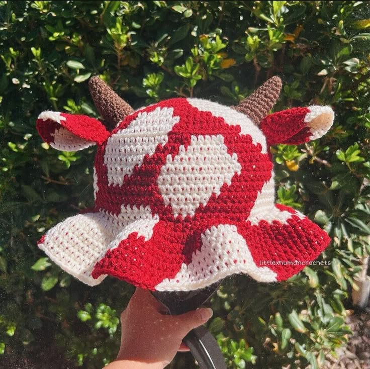

some of the accessories
Some of the acessories include hats with different patters. Some accesories are earings that come in ditterent shades. There are also wrist accesories like bracelets. There are also accesores for legs like socks, shoes, or ancle bracelets. There are also accesries for the face like fun eyline, pirecings, and glasses. All of these things work together to help evelvate the texure of fashion.
example of fun accesories

why are accessories need?
Fun fashion is fashion that consists of multiple accessories to help elavate a look. Like mentioned earlier part of expression through fashion is experimenting with textures. Acessories are there to elevate your look, and bring more fun to outfits. They also help tie your look together with a fun cherry on top. Accessories also promote a sencse of self with them ranging from baseball caps to expresssive bucket hats.
Examples of un accesories


some fashion hats
- beret
- conductor hat
- bucket hat
- head band